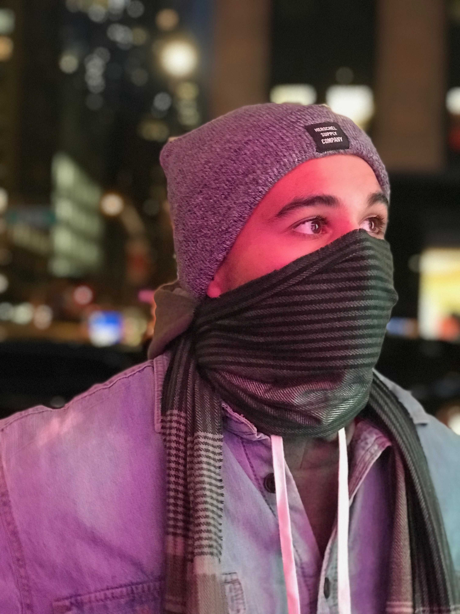

About Me
Hi, My name is Diego Rodriguez! I was originally born in Kingston, New York, but I grew up in San Diego, California. Since moving from the East Coast, I have really adopted the California lifestyle. I love playing sports and doing activities that keep me active such as football, surfing, swimming, yoga and cycling. I am also a huge Raiders fan, so you can catch me in Oakland atleast once a year!
I am currently in my fourth year at California Polytechnic State University, San Luis Obispo majoring in kinesiology and minoring in psychology. After graduation, I hope to continue my education and eventually become a Doctor of Chiropractic, so that I can continue to promote health through holistic and preventitive care.
This website is not only a collection of some things that I've done, but also a way for me to showcase some of my newly acquired coding skills! If you have any questions feel free to contact me or follow me on social media!